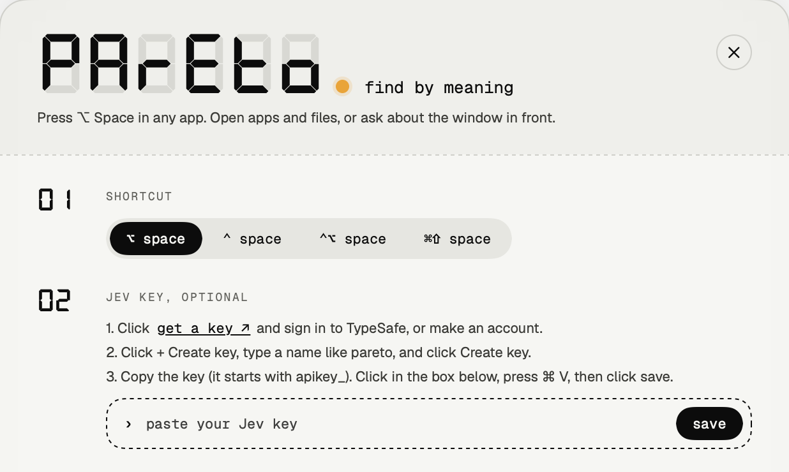
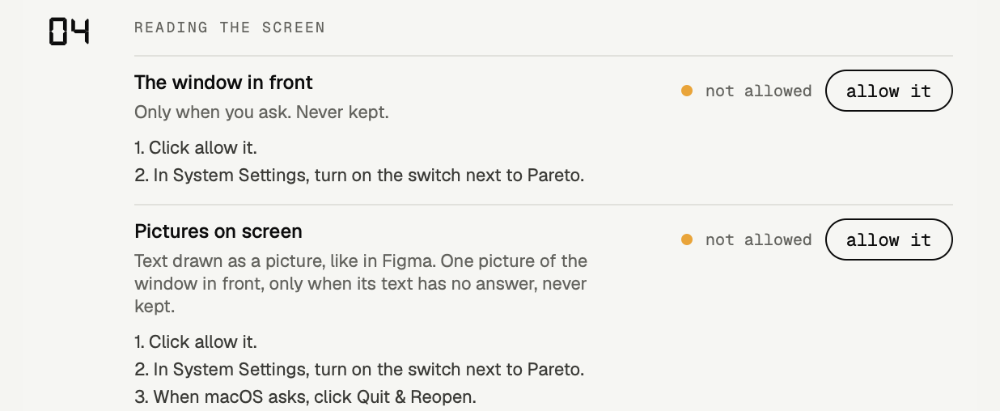

version __VERSION__ · needs macOS 13 or later · by Pareto Labs
A search bar for your whole Mac. Press ⌥ OptionSpace in any app to open apps and files, or to ask about the window in front, including scanned PDFs and pictures.
1Install
Drag Pareto onto Applications in the window this guide came in.
Open your Applications folder and double-click Pareto.
If macOS says it can't open the app, click Done. Then:
Open System Settings and click Privacy & Security.
Scroll to the bottom and click Open Anyway next to Pareto.
Type your Mac password if it asks, then click Open Anyway again.
You only do this once. macOS asks because the app isn't registered with Apple yet.
If you opened it straight from the download window, it offers to move itself. Click Move and Open.
A welcome window opens, and a magnifier appears in the menu bar at the top of your screen.
2Add your keys (optional)
Without a key, Pareto opens apps and files by name and finds exact words, in windows and in pictures, and nothing leaves your Mac. To skip keys, go to step 3. A key adds plain English, like "the pdf about my taxes", and answers about the window in front. Jev finds answers fastest. A Nebius key adds NVIDIA Nemotron, which writes a short answer, thinks harder when you ask, and finds answers when there's no Jev key. With only one key, everything still works.
Jev key
In the welcome window, click get a key ↗. Your browser opens TypeSafe's site, console.typesafe.ai.
Sign in, or make an account.
On the API keys page, click + Create key at the top right. (If you land somewhere else, click API Keys in the menu on the left.)
Type a name, like pareto, and click Create key.
Copy the new key. It starts with apikey_.
Back in the welcome window, click in the box that says paste your Jev key, press ⌘ CommandV, then click save.
saved to your Keychain appears under the box.

Jev charges by use. A question about a long web page costs about a tenth of a cent. If the bar says your Jev account is out of funds, open console.typesafe.ai, click Billing, then Add funds.
Nebius key
Under NEBIUS KEY, click get a key ↗. Your browser opens tokenfactory.nebius.com.
Sign in, or make an account, then create an API key and copy it.
Click in the box that says paste your Nebius key, press ⌘ CommandV, then click save. It checks the key and shows Lightning ✓ Super ✓ Ultra ✓.
In your Nebius account profile, switch on Zero Data Retention, so Nebius doesn't keep what Pareto sends it.
3Let it read the screen
Two switches, both optional. You can skip them if you only want to open apps and files.
The window in front lets it read the text of the window in front. Click allow it, then turn on the switch next to Pareto in System Settings.
Pictures on screen lets it read text drawn as a picture, like in Figma or a photo on a web page. Click allow it, turn on the switch, then click Quit & Reopen when macOS asks. This needs macOS 14 or later.
Type your Mac password if System Settings asks. Under READING THE SCREEN, the amber light turns black and says allowed. Scanned PDFs and picture files don't need the second switch; they're read from the file.

4Use it
Press ⌥ OptionSpace in any app. Type what you want, then press Return.
open slack
Opens Slack.
i want to do some maths
Opens Calculator. Needs a key.
find my tax pdf from march
Lists matching files. With a key, it understands "from march".
when is rent due?
With a web page, PDF or picture in front, shows the sentence that answers it. Click show it to go there. with a Nebius key.
what does living here cost? then ⌘Return
Thinks harder: Nemotron 3 Ultra reads all of it and answers. with a Nebius key with a Nebius key.
go to youtube.com
Opens the site in your browser.
15% of 80
Shows 12. Return copies it.
↑↓ pick a result. Tab on a PDF or picture asks your question about it without opening it. ⌘ CommandReturn thinks harder on a window, PDF or answer, and shows a file in Finder. Esc goes back or closes the bar.
Voice: hold ⌥ OptionSpace, speak, then let go. The first time, macOS asks to use the microphone and speech recognition; click Allow. Wispr Flow works too: open the bar and speak, and it runs when you stop.
If another app already uses ⌥ Option Space (the ChatGPT app does), the welcome window says so. Pick another shortcut there, or later from the magnifier in the menu bar: Settings….
What it can do
Open apps by name, by initials (ss for System Settings), or, with a key, by description ("the app I use for notes").
Find files through Spotlight, by name or by what's inside them.
Answer a question about the window in front: web pages in Chrome and Safari, Mail, Notes, TextEdit, and PDFs in Preview or Chrome. It quotes the sentence that answers and takes you to it.
Read scanned PDFs and picture files (PNG, JPG, HEIC and others) with Apple's text recognition, on your Mac.
With screen reading on, read text drawn as a picture in the window in front.
Open websites, search Google, do sums, and list what you opened lately.
What it can't do
Write answers without a Nebius key. Answers are then sentences quoted from the window.
Read hidden text: collapsed sections, closed menus, other tabs, or posts a page hasn't loaded yet.
Read any window except the one in front.
Read all of a very long web page. It stops reading after 4 seconds, so the end may be missed.
Read pictures on screen on macOS 13.
Understand plain English without a key; without one it matches names and exact words.
Privacy
It reads the window in front only when you ask about it, and keeps nothing it read. It never reads password boxes.
With screen reading on, it takes one picture of the window in front, only when that window's text has no answer. The picture is read on your Mac and then dropped.
Without a key, nothing leaves your Mac. With a key, what you ask and the text being searched go to Jev, from TypeSafe AI, and to Nebius when Nemotron is used, and nowhere else.
Your keys are stored in your Mac's Keychain.
Voice uses Apple's speech recognition, on your Mac when it supports that. It listens only while you hold the shortcut.
Update or remove it
To update, open the new download and drag Pareto onto Applications. Click Replace. Your key, settings and permissions stay.
Had Ctrl+F by meaning before? That was this app's old name. The first time Pareto opens, it offers to move the old copy to the Trash. Click Move to Trash. Your key, settings and permissions carry over.
To remove it, click the magnifier in the menu bar and choose Quit. Then drag Pareto from Applications to the Trash (called Bin on some Macs).